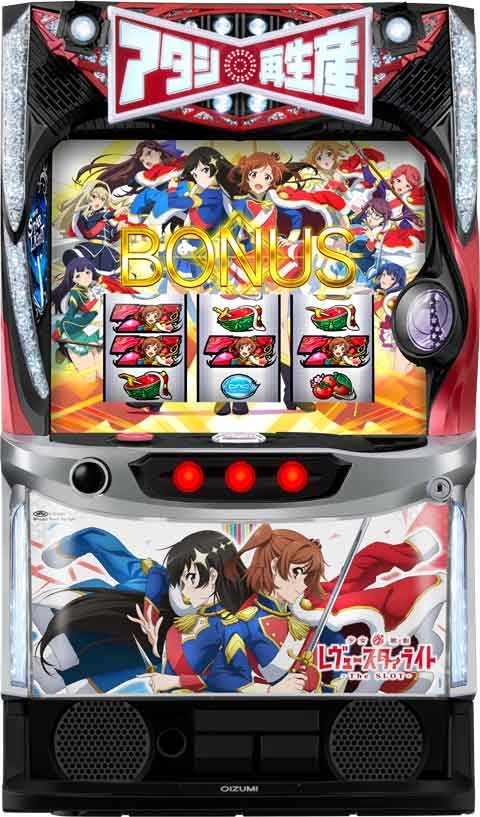
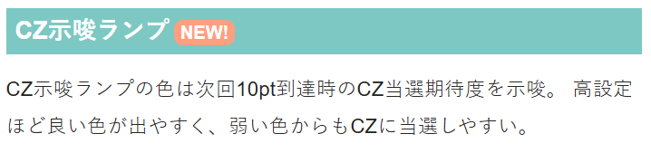
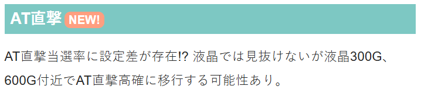

L少女☆歌劇 レヴュースタァライト ‐The SLOT‐

【天井情報】
AT天井 900G+α AT当選 設定変更後は天井が600G+αに短縮。
【リセット判別】
不明
【有利区間について】
有利区間リセット時はロンド・ロンド・チェレンジに突入。成功率は75%で成功時の50%で裏モードへ。
有利区間切れ条件 不明
狙い目
※天井狙い時は液晶ゲーム数で確認
【リセット狙い】
250Gから
※ボーナスかAT当選でリセット恩恵は無くなる。
【ボーナスorAT間天井狙い】
550Gから
【ゾーン狙い】
300ゾーン 290Gから
※330～360くらいに当選履歴あり。320Gで何も無ければやめ？
※300GでAT直撃高確に移行する可能性がある。高確行かなかった場合や高確抜けたらやめ？
【有利区間切れ狙い】
不明
やめ時
AT終了後状態確認してやめ。
AT終了時のLED紫はCZ当選まで。LED赤は不明。
その他
・CZ示唆

・AT直撃について

参考元
基本情報
- メーカー: オーイズミ
- 機械割: 97.8% 〜 110.0%
- 導入開始日: 2025年03月03日（月）
- ゲーム性概要: ●リアルボーナス＋ATタイプ ●ボーナス当選でATが強化される貫通型ATシステムを搭載 ●AT中は複数の要素が絡み合うことで爆発的に性能が強化 ●ツラヌキ時は期待度約75%の引き戻しCZに突入 ●引き戻しCZ成功時の50%でポジションゼロモード突入


打ち方
打ち方・小役
打ち方（小役狙い）
［最初に狙う絵柄］

左リール上段付近にBARを目押し。スイカがスベってきた時以外は、中＆右リールフリー打ちでOKだ。
［スイカ停止時］ 中リールにスイカを目押しして、右リールはフリー打ちで消化。 スイカはボーナス絵柄（赤7or青7orBAR）の上にあるのでボーナス絵柄目安で狙おう。

［レア役の停止形］

［リーチ目の停止例］

※リプレイ・スイカ絵柄は2種類ずつあるが、特に表記がない場合はどちらでもOK
ボーナス中の打ち方
基本的には押し順ナビ通りに打てばOK。リール枠が白くフラッシュした場合は、いずれかのリールにBARを狙おう。

解析情報通常時
小役関連
小役確率 （設定1）
| 役 | 確率 |
|---|---|
| スイカ | 1/95.4 |
| 弱チェリー | 1/111.1 |
| 強チェリー | 1/240.9 |
| チャンス目 | 1/292.6 |
| キラめき目 | 1/20.9 |
| 中段チェリー（リーチ目役A） | 1/16384 |
※キラめき目の確率はフラッシュ非発生含む
弱＆強チェリーは通常時の数値で、状態によって出現確率が変化する。
ボーナス同時当選期待度 （設定1）
| 役 | 同時当選期待度 |
|---|---|
| スイカ | 18.8％ |
| 弱チェリー | 2.0％ |
| 強チェリー | 33.8％ |
| チャンス目 | 39.3％ |
| キラめき目 | 9.5％ |
| 中段チェリー（リーチ目役A） | 100％ |
※キラめき目の期待度はフラッシュ発生時の数値
キラめき目はフラッシュ発生時（レア役扱い）の期待度になる。
通常時・ボーナス内部中のリーチ目確率
| 役 | 赤7BIG内部中 | 青7BIG内部中 |
|---|---|---|
| リーチ目B | 1/96.4 | 1/546.1 |
| リーチ目C | 1/63.0 | 1/546.1 |
| リーチ目D | 1/63.0 | 1/546.1 |
| リーチ目E | 1/96.4 | 1/546.1 |
| 合算 | 1/19.1 | 1/136.5 |
赤7BIG内部中のリーチ目確率は約1/19。このフラグを6択ベルこぼしの前に引けば再生産モードに突入する。
内部状態関連
AT直撃高確
通常時は300G付近or600G付近で、内部的にAT直撃が優遇された「AT直撃高確」へ移行。見た目上、判別はできないが狙い目の一つとしてチェックしておきたい。 ちなみにAT直撃高確経由の直撃確率は全設定共通。AT直撃高確移行後はボーナスorAT当選まで通常へ転落することがなく、レア役成立時に前兆を経由してATに当選する（ボーナス同時当選時を除く）。 その他の直撃ルートは高設定が優遇されるようだ。
AT直撃高確移行率 （設定1）
| ゲーム数 | 移行率 |
|---|---|
| 300G | 約23％ |
| 600G | 約23％ |
高確
通常時の高確滞在中は、CZポイント獲得率、AT直撃当選率、BIG当選時の初期ランクが優遇。高確へはレア役での抽選やBIG後の50%で移行する。
高確性能
| 項目 | 内容 |
|---|---|
| 移行契機 | レア役での抽選、AT非当選のBIG後の50% |
| 高確中の恩恵 | CZポイント獲得率、AT直撃当選率、 BIG当選時の初期ランクが優遇 |
［レア役］高確移行率（設定1）
| 役 | 移行率 |
|---|---|
| スイカ・強チェリー・チャンス目 | 2.34% |
| 弱チェリー・キラめき目 | 16.80% |
※キラめき目はフラッシュ発生時の数値
［ボーナス後］高確移行率（全設定共通）
| 契機 | 移行率 |
|---|---|
| AT非当選のBIG後 | 50.0% |
CZポイント
CZポイント概要
レア役時は内部状態（通常or高確）を参照して、CZポイントを獲得。 CZポイントは累計10ptごとに、4種類のテーブルを参照してCZが抽選 される。 10pt到達時にCZに当選した場合は、本前兆中のレア役で「神楽ひかり」参加を抽選（参加した状態のCZに成功すれば上乗せ高確率AT濃厚）。 また、CZポイントはCZ当否不問で内部的に累積されていき（有利区間リセットまでCZポイントのリセットなし）、 規定ポイント到達後の状態でBIGに当選すると、エピソードボーナスor This is 天堂真矢ボーナスに昇格 するといった要素もある。
CZポイントの特徴
| 項目 | 示唆 |
|---|---|
| 獲得契機 | レア役、REG中の抽選 |
| 1回の獲得ポイント | 1 or 3 or 5 or 10pt ※チャンス目・強チェリーは10pt濃厚 |
| 10pt到達ごとの抽選 | CZ抽選テーブルを参照してCZを抽選 |
| CZ本前兆中の抽選 | レア役で「神楽ひかり」参加を抽選 |
| 規定の累計ポイント 到達時の恩恵 | BIGに当選すればエピソードボーナスor This is 天堂真矢ボーナス濃厚 |
CZ抽選テーブル別・10pt到達時の期待度
| テーブル | 期待度 |
|---|---|
| テーブル1 | 調査中 |
| テーブル2 | 調査中 |
| テーブル3 | 50.0% |
| テーブル4 | 100% |
AT終了後は必ずテーブル3or4が選択されるため、早いCZ当選に期待できる。
累計ポイント天井振り分け
| 累計ポイント | 振り分け |
|---|---|
| 0pt | 調査中 |
| 100pt | 調査中 |
| 200pt | 調査中 |
| 300pt | 調査中 |
| 400pt | 調査中 |
| 500pt | 調査中 |
CZポイントの累計（天井）は振り分けで決定。最大500ptでBIG当選→エピソードボーナスor This is 天堂真矢ボーナスになる。
CZポイント振り分け 通常中
| ポイント | スイカ | 弱チェリー・ キラめき目 | 強チェリー・ チャンス目 |
|---|---|---|---|
| 1pt | 85.9% | 51.9% | – |
| 3pt | 10.9% | 35.2% | – |
| 5pt | 2.3% | 9.8% | – |
| 10pt | 0.8% | 3.1% | 100% |
高確中
| ポイント | スイカ | 弱チェリー・ キラめき目 | 強チェリー・ チャンス目 |
|---|---|---|---|
| 1pt | – | – | – |
| 3pt | 86.7% | 55.1% | – |
| 5pt | 10.9% | 35.2% | – |
| 10pt | 2.3% | 9.8% | 100% |
※キラめき目はフラッシュ発生時の数値
10ptを超えた分は次回に持ち越される（持ち越し分が10ptを超えた場合、次のCZ抽選テーブルを参照してCZを抽選）。
チャレンジ・レヴュー（CZ）
CZ概要
前半では成立役に応じて舞台少女の参加を抽選、後半では集まった舞台少女を参照したジャッジ演出でATの当落を告知する2部構成のCZ。 後半パートでは、まず開始時にATを抽選。消化中のレア役でATのセットストックが抽選される（開始時にAT非当選の場合は当選に書き換え）。

チャレンジ・レヴュー（CZ）性能
| 項目 | 内容 |
|---|---|
| 当選契機 | CZポイント10pt時の抽選 |
| ゲーム数 | 18G （前半12G＋発展先決定ゲーム1G＋後半5G） |
| 確率 | 1/265.9（設定1） |
| AT当選期待度 | 平均37% |
| 前半の抽選 | 成立役に応じて舞台少女の参加を抽選、 リプレイの一部で「神楽ひかり」の参加抽選 |
| 後半の抽選 | 舞台少女の参加数に応じて移行時にAT抽選、 消化中は成立役に応じてATを抽選 |
| その他 | 神楽ひかり参加のCZ成功で上乗せ高確率AT濃厚、 CZ中のボーナスはAT濃厚 |
参加人数が0人だった場合もチャンスで、「渇望のレヴュー」以上濃厚になる。
CZ確率
| 設定 | 確率 |
|---|---|
| 1 | 1/265.9 |
| 2 | 1/254.7 |
| 4 | 1/207.6 |
| 5 | 1/190.3 |
| 6 | 1/179.5 |
［神楽ひかり参加］ 神楽ひかり参加中は、孤独のレヴューor運命のレヴューという専用のジャッジ演出に発展。成功すれば上位ATのレヴューデュエット（上乗せ高確率AT）濃厚となる。

［前半の舞台少女参加］ ベル・リプレイ・レア役時に参加を抽選。1契機で2人が参加する場合もある。

［後半のジャッジ演出］ 消化中にチャンス目or強チェリーを引けばATストック（AT非当選時の書き換え含む）濃厚だ。

ジャッジ演出一覧
| ジャッジ演出 | 期待度 | |
|---|---|---|
| 神楽ひかり 不参加時 | 誇りのレヴュー | ★ |
| 神楽ひかり 不参加時 | 絆のレヴュー | ★★ |
| 神楽ひかり 不参加時 | 渇望のレヴュー | ★★★ |
| 神楽ひかり 不参加時 | 嫉妬のレヴュー | ★★★★ |
| 神楽ひかり 不参加時 | 約束のレヴュー | ★★★★★ |
| 神楽ひかり 参加時 | 孤独のレヴュー | ★～★★★★ |
| 神楽ひかり 参加時 | 運命のレヴュー | ★★★★★ |
CZ濃厚の約束のレヴュー、運命のレヴュー中はレア役でATのセットストックが抽選される。
舞台少女参戦当選率
| 役 | 1人 | 2人 |
|---|---|---|
| ベル・リプレイ | 67.97% | 2.34% |
| 弱レア役（キラめき目含む） | 87.50% | 12.50% |
| 強レア役 | － | 100% |
ベルやリプレイは約70%で当選。CZ中のキラめき目はすべてレア役扱い（フラッシュ発生）なので、レア役合算は約1/13と高い。
リプレイ成立時の神楽ひかり参戦当選率
| 役 | 当選率 |
|---|---|
| リプレイ | 10.16% |
通常の舞台少女参戦抽選とは別で、リプレイ時は神楽ひかりの参戦が抽選される。
後半のAT抽選
後半パート移行時に参加人数に応じてATを抽選する。消化中はレア役で成功書き換え（AT当選中はセットストック）を抽選。
強チェリーとチャンス目は書き換え（ストック）当選濃厚となる。
ジャッジ種別ごとのAT当選率（設定1）
| ジャッジ | ジャッジ開始時の AT当選率 | 書き換えを含んだ トータルAT当選率 |
|---|---|---|
| 誇りのレヴュー | 11.21% | 18.00% |
| 絆のレヴュー | 16.22% | 23.10% |
| 渇望のレヴュー | 30.90% | 37.40% |
| 嫉妬のレヴュー | 73.37% | 77.20% |
| 約束のレヴュー | 100% | 100% |
人数を参照して、上記ジャッジのいずれかへ移行する。
ジャッジ消化中のAT（ストック）当選率
| ジャッジ | 弱レア役 | 強レア役 | ボーナス |
|---|---|---|---|
| 誇りのレヴュー | 12.50% | 100% | 100% |
| 絆のレヴュー | 12.50% | 100% | 100% |
| 渇望のレヴュー | 20.31% | 100% | 100% |
| 嫉妬のレヴュー | 50.00% | 100% | 100% |
| 約束のレヴュー | 100% | 100% | 100% |
前兆
CZ本前兆中の神楽ひかり参加当選率
| 役 | 当選率 |
|---|---|
| スイカ・弱チェリー・キラめき目 | 3.1% |
| 強チェリー・チャンス目 | 50.0% |
※キラめき目はフラッシュ発生時の数値
CZ本前兆中のレア役では、神楽ひかりの参加を抽選する。
直撃抽選
高確中or通常時のREG終了後のAT直撃当選率
高確中および、通常時のREG終了後の内部ボーナス中はレア役成立時にAT直撃を抽選。 ゲーム数契機で移行する直撃高確中のAT直撃抽選は全設定共通だ。
フリーズ
ロングフリーズ


ロングフリーズ性能
| 項目 | 示唆 |
|---|---|
| 当選契機 | 中段チェリー契機の赤7BIGの一部 |
| 発生確率 | 約1/299593 |
| 恩恵 | AT＋ポジションゼロモード ＋セットストック3個以上 |
| 期待出玉 | 約2500枚 |
［終了後は専用のエピソードボーナスへ］

1G連フリーズ


1G連フリーズ性能
| 項目 | 示唆 |
|---|---|
| 当選契機 | 青7BIG終了後の1G目に赤7BIG成立 |
| 発生確率 | 調査中 |
| 恩恵 | AT＋再生産モード ＋チェリー＆BAR揃い高確率＋舞台効果全点灯 |
| 期待出玉 | 調査中 |
［強力なトリガー！］ BAR＆チェリー高確率と再生産モードの複合だけでも強力だが、さらに舞台効果が全点灯するため、破壊力は抜群だ。

1G連フリーズ動画
青7BIG終了後、1G目に赤7BIGが成立すると1G連フリーズが発生。AT＋再生産モード＋チェリー＆BAR揃い高確率＋舞台効果全点灯と、恩恵はかなり強力だ。
ロングフリーズ動画
中段チェリー＋赤7BIG当選時の一部で発生。AT＋ポジションゼロモード＋セットストック3個が濃厚となる。
解析情報ボーナス時
BIGボーナス
BIG概要
BIG中はBAR揃いでATセットストック（初当り時の初回はAT）濃厚。BAR揃い期待度の異なる8段階のBAR揃いランク（ランク8＜ランク1）があり、 狙えカットインがフェイクだった場合に1段階以上昇格 する。つまり、フェイクが多いほどATに当選しやすくなっていくわけだ。 BARが揃って もランクが下がることはない ため、上位ランク移行時はAT当選後はセットストック獲得にも期待できる。 ちなみに、当選契機は赤7BIGがリーチ目役orレア役、青7BIGはレア役契機のみとなる。

BIG性能
| 項目 | 内容 |
|---|---|
| 当選契機 | リーチ目役成立orレア役時の一部 |
| 獲得枚数 | 約111枚 |
| 消化中の抽選 | BAR揃いランクの昇格、AT（BAR揃い）抽選 |
| その他 | BAR揃いランクは基本的にランク8からスタート、 ランク？スタートは内部的にランク7以上濃厚 |
※リアルボーナス
BIG中の抽選まとめ
| 役 | 抽選 |
|---|---|
| 狙えカットイン | BAR揃いでAT濃厚、フェイク時はランク昇格 |
| ハズレ | 連続すればランク昇格抽選 |
| レア役 | ランク昇格抽選 |
AT中BIGの特徴
| BIGの種類 | 特徴 |
|---|---|
| 赤7BIG （華恋BIG） | ● 成立時は再生産モードへ移行 ● ジャッジ終了後に告知（AT完走型） |
| 青7BIG （ひかりBIG） | ● 成立後はすぐに揃えることが可能（ハズレ時のみ） ● 終了後はチェリー＆BAR揃い高確率状態へ移行 |
赤7or青7BIG中の消化中の初当り時・AT中ともに抽選内容は同じ。 AT中（上乗せ高確率AT・高ループAT含む）に 赤7BIGが成立すると再生産モード に移行して、ATセット終了後にボーナスを告知。 青7BIGは終了後にBAR＆チェリー高確率状態 へ移行。再生産モードとBAR＆チェリー高確率状態が複合すると超強力なトリガーとなるのだが、再生産モード中は内部的にボーナスが成立しているため、ボーナスは抽選されない。つまり、青7BIG終了後のBAR＆チェリー高確率状態で赤7BIGを引いた時にのみ2つの状態が複合する。
ランクごとの舞台少女
| ランク | 舞台少女 |
|---|---|
| 8 | 愛城華恋 |
| 7 | 星見純那 |
| 6 | 露崎まひる |
| 5 | 石動双葉 |
| 4 | 花柳香子 |
| 3 | 大場なな |
| 2 | 西條クロディーヌ |
| 1 | 天堂真矢 |
| ？ | 神楽ひかり |
［狙えカットイン］

［ランク昇格］ キャラがランクに対応している。

カットイン発生確率＆BAR揃い期待度
| ランク | 確率 | 期待度 |
|---|---|---|
| 8 | 1/17.5 | 1.89% |
| 7 | 1/17.4 | 2.51% |
| 6 | 1/17.3 | 3.11% |
| 5 | 1/17.0 | 4.31% |
| 4 | 1/16.3 | 8.27% |
| 3 | 1/14.7 | 17.08% |
| 2 | 1/9.8 | 45.18% |
| 1 | 1/7.1 | 65.95% |
ランクが上がるほどカットイン確率も期待度もアップしていく。
ランクアップ当選率
| 役 | 当選率 |
|---|---|
| スイカ | 12.5% |
| チャンス目 | 100% |
| ハズレ2連 | 0.4% |
| ハズレ3連 | 2.0% |
| ハズレ4連 | 50.0% |
| ハズレ5連 | 100% |
ランクアップ当選時は、ハズレの連続回数はリセットされる。
BIG中のレア役確率
| 役 | 確率 |
|---|---|
| スイカ | 1/95.4 |
| チャンス目 | 1/292.6 |
BAR揃いランク1時・レア役でのATストック当選率
| 役 | 当選率 |
|---|---|
| スイカ | 3.10% |
| チャンス目 | 50.00% |
BAR揃いランクが1まで昇格した後は、レア役でATのストック抽選をおこなう（ハズレ連でのストック抽選はナシ）。
初期BAR揃いランク振り分け
| ランク | 通常時の高確中 | AT中の舞台効果 トップスタァ発動中 |
|---|---|---|
| ランク8 | － | － |
| ランク7 | 91.02% | － |
| ランク6 | 2.73% | 52.34% |
| ランク5 | 2.73% | 28.13% |
| ランク4 | 1.95% | 12.50% |
| ランク3 | 0.78% | 4.69% |
| ランク2 | 0.39% | 1.56% |
| ランク1 | 0.39% | 0.78% |
通常時の高確中は初期ランク7以上、AT中のトップスタァ中は初期ランク6以上を選択。初期ランクが8以外の場合、見た目上のランクは？となり、キャラは神楽ひかりが表示される。
REGボーナス
REG概要
初当り時はCZポイント、AT中は舞台効果ポイントを抽選。各ポイントは、 ベルorレア役成立時に画面左に表示される保留の色を参照して抽選 される。保留は1Gごとに切り替わるので、ベルやレア役を引くタイミングが重要になる。 AT中は規定ポイント到達で次セットの舞台効果が1つ以上追加。当該REGのポイントで舞台効果を獲得できなくても、次回に引き継ぐため引き損はない。

REG性能
| 項目 | 通常時 | AT中 |
|---|---|---|
| 当選契機 | レア役時の一部 | |
| 獲得枚数 | 約44枚 | 約60枚 |
| 消化中の抽選 | CZポイント抽選 | 舞台効果ポイント抽選 |
※リアルボーナス
［保留］ 1Gごとに下から上にスライドしていく。

アイコンごとの獲得ポイント
| 色 | ポイント |
|---|---|
| 青 | 1pt以上 |
| 黄 | 2pt以上 |
| 緑 | 3pt以上 |
| 赤 | 5pt濃厚 |
［ランプの色で期待度示唆］ 液晶右側にあるランプの色が変わるほど、通常時ならCZ当選、AT中なら舞台効果点灯に期待できる。 赤まで行けば大チャンスだ。

［初当りREG終了後］ リアルボーナスなのに通常時とAT中の獲得枚数が違うのはなぜ？…と思ったプレイヤーも多いと思うが、実は通常時に限り、見た目上REGが終了していても、REGの終了条件である“132枚を払い出すまで”内部的なREG状態が継続。 内部REG中はボーナスが抽選されないかわりに、レア役でAT直撃が抽選される。

エピソードボーナス
エピソードボーナス概要
エピソードボーナスは3種類あり、発生条件や恩恵は滞在状態によって変化。 エピソードボーナス中も通常のボーナスと同様に、REG中はポイント抽選が、BIG中はBAR揃い抽選がおこなわれている。ただし、どちらも見た目での判別はできない。

エピソードボーナス一覧
| 種類 | 発生条件・恩恵など |
|---|---|
| ひかり、さす方へ | ● 初当りBIGorREGの一部で発生 ● 当選した時点でAT濃厚 |
| されど舞台はつづく The Show Must Go On | ● 上乗せ高確率AT中BIGの一部で発生 ● 高ループATへ突入 |
| わたしたちは | ● ロングフリーズ発生時のBIG ● AT＋ポジションゼロモード＋セットストック3個以上濃厚 |
This is 天堂真矢ボーナス
This is 天堂真矢ボーナス概要
BIG入賞時のフリーズを契機にスタートするプレミアムボーナス。当選した時点でAT濃厚となるだけでなく、消化中はBAR揃いランクが最上位の「ランク1」からスタートするため、大量セットストックのチャンスとなる。

This is 天堂真矢ボーナス性能
| 項目 | 内容 |
|---|---|
| 当選契機 | BIGの一部 |
| 獲得枚数 | 約111枚 |
| 恩恵 | AT濃厚かつランク1スタート |
［ランク1スタート］ 最初から最後までランク1なのでBARが超高確率で揃う＝大量セットストックに期待できる！

レヴュースタァライト（AT）
AT概要
セット管理＋ゲーム数上乗せタイプのAT。点灯している舞台効果に応じて上乗せ性能が変化する。 消化中は レア役でゲーム数上乗せ・セットストック・特化ゾーンを同時抽選 するところがポイントだ。 ゲーム数終了後はセットストックの有無にかかわらず、5G間のジャッジパートに移行。ストックがなくても、ジャッジパート移行時の抽選やジャッジ中のレア役時の抽選でストックを獲得することができる。

AT中BIG当選時の詳細
レヴュースタァライト（AT）性能
| 項目 | 内容 |
|---|---|
| 当選契機 | CZ成功、BIG中のBAR揃いなど |
| 初期ゲーム数 | 25G＋ジャッジパート（5G） |
| 純増 | 約2.2枚/G （再生産モード中は約3.4枚/G） |
| 消化中の抽選 | ゲーム数上乗せ、セットストック、 特化ゾーン、ボーナス |
| ジャッジパートの 抽選 | 突入時と消化中は別途セットストックを抽選 ※ストックあり時はストックを優先して使用 |
| 備考 | AT初回突入時は必ず舞台効果が1つ以上点灯、 13セット・20セット継続時は 高ループAT突入のチャンス |
AT中に上乗せ高確率ATのセットストックを獲得した場合、通常のATのストックがあっても優先して使用される。
舞台効果ごとの特性
| 舞台効果 | 特性 |
|---|---|
| スポットライト | レア役を引けば上乗せ濃厚 |
| 輪舞曲(ロンド) | セットストック上乗せ時に 約70％で再演ループが当選 |
| トップスタァ | BIG開始時のランクが優遇 |
［舞台効果］ 舞台効果は基本的にAT開始から2〜3G後に告知され、効果（点灯）はセット開始〜終了まで継続。セット開始時に付与される効果なので、追加で点灯することはない。 セット開始直後から前兆がスタートしたり上乗せが発生した場合は演出終了後に告知されるが、内部的に効果は常に発動している。 AT初当り時はいずれかの舞台効果獲得濃厚。初当り時に舞台効果ポイントを60pt持った状態でスタートし、REG中の抽選等でポイントを加算する。セット継続時に最低10ptが加算されるため、遅くとも5セット目までには次の舞台効果を獲得できる。

［ゲーム数上乗せは100G到達でセットストックに！］ セット間に上乗せしたゲーム数は画面右下の上乗せカウンターに表示されていて、100G（MAX）に到達すると、 以降の上乗せがすべてATセットストック に変化。 セット終了時にカウンターはリセットされる。

［BAR揃いでセットストック］ BAR揃いでセットストック濃厚。ちなみに、セットストックは必ずしも告知されるわけではないので、レア役時などに非告知でストックされている場合もある。

［ジャッジパート］ 対戦相手でセットストック獲得期待度が変化する。

ジャッジ演出の対戦相手別ストック当選期待度
| 対戦相手 | 期待度 |
|---|---|
| VS天堂真矢 | ★ |
| VS大場なな | ★★ |
| VS星見純那 | ★★★ |
| VS露崎まひる | ★★★★ |
BAR＆チェリー高確率解説
AT中（上位AT含む）の青7BIG終了後に移行するBAR揃いとチェリーの高確率状態。当該セット間はこの状態が引き継がれる。 舞台効果や再生産モードと複合することで、出玉性能が飛躍的にアップする。

［スポットライト非発動中］上乗せ当選率
| 上乗せ種別 | キラめき目 | スイカ | 弱チェリー |
|---|---|---|---|
| ゲーム数上乗せ | 2.73% | 0.78% | 2.73% |
| ストック | 5.47% | 1.56% | 5.47% |
| ゲーム数上乗せ＋ストック | 1.17% | － | 1.17% |
| CMR | － | 1.56% | － |
| ゲーム数上乗せ＋CMR | － | 0.78% | － |
| 合算 | 9.40% | 4.70% | 9.40% |
| 上乗せ種別 | 強チェリー | チャンス目 | BAR揃い |
| ゲーム数上乗せ | 50.00% | 49.22% | － |
| ストック | － | － | 100% |
| ゲーム数上乗せ＋ストック | 50.00% | 50.00% | － |
| CMR | － | 0.78% | － |
| ゲーム数上乗せ＋CMR | － | － | － |
| 合算 | 100% | 100% | 100% |
※ストック…ATのセットストック ※CMR…クライマックスレヴュー ※キラめき目の当選率はフラッシュ発生時の数値
強レア役は上乗せ濃厚。チャンス目でゲーム数上乗せを否定すればクライマックスレヴュー濃厚だ。
［スポットライト発動中］上乗せ当選率
| 上乗せ種別 | キラめき目 | スイカ | 弱チェリー |
|---|---|---|---|
| ゲーム数上乗せ | 82.81% | 95.31% | 82.81% |
| ストック | － | － | － |
| ゲーム数上乗せ＋ストック | 17.19% | 1.56% | 17.19% |
| CMR | － | 0.78% | － |
| ゲーム数上乗せ＋CMR | － | 2.34% | － |
| 合算 | 100% | 100% | 100% |
| 上乗せ種別 | 強チェリー | チャンス目 | BAR揃い |
| ゲーム数上乗せ | 29.69% | 28.91% | － |
| ストック | － | － | 100% |
| ゲーム数上乗せ＋ストック | 70.31% | 70.31% | － |
| CMR | － | － | － |
| ゲーム数上乗せ＋CMR | － | 0.78% | － |
| 合算 | 100% | 100% | 100% |
※ストック…ATのセットストック ※CMR…クライマックスレヴュー ※キラめき目の当選率はフラッシュ発生時の数値
スポットライト発動中はセットストック当選率もアップ。スイカでゲーム数が上乗せされなかった場合はクライマックスレヴュー濃厚になる。
ゲーム数上乗せ当選時のゲーム数振り分け
| 上乗せ | キラめき目 | スイカ | 弱チェリー |
|---|---|---|---|
| ＋5G | 96.88% | ー | 96.88% |
| ＋10G | 2.34% | 98.05% | 2.34% |
| ＋20G | 0.39% | 0.78% | 0.39% |
| ＋30G | 0.39% | 0.39% | 0.39% |
| ＋50G | ー | 0.39% | ー |
| ＋100G | ー | 0.39% | ー |
| 上乗せ | 強チェリー | チャンス目 | 中段チェリー |
| ＋5G | ー | ー | ー |
| ＋10G | 96.09% | 96.09% | ー |
| ＋20G | 2.34% | 2.34% | ー |
| ＋30G | 0.78% | 0.78% | ー |
| ＋50G | 0.39% | 0.39% | ー |
| ＋100G | 0.39% | 0.39% | 100% |
※キラめき目はフラッシュ発生時の数値
ジャッジパートの対戦相手振り分け（ストックなし時）
| 対戦相手 | 1セット目 | 2セット目以降 |
|---|---|---|
| VS天堂真矢 | 16.70% | 84.40% |
| VS大場なな | 11.90% | 10.20% |
| VS星見純那 | 6.70% | 3.10% |
| VS露崎まひる | 64.60% | 2.30% |
当該セットが始まったタイミングで、ジャッジパートの対戦相手を決定。ストックを持っている場合は上記振り分けでなくランダムで決定される（期待度の高いキャラが出現しやすい）。
［ストックなし時］ ジャッジパート突入時のセットストック当選率
| ジャッジ | 当選率 |
|---|---|
| VS天堂真矢 | 2.30% |
| VS大場なな | 5.50% |
| VS星見純那 | 15.20% |
| VS露崎まひる | 50.00% |
ジャッジパートではセットストックを所持していない場合、突入時にストック獲得を抽選。ストックの有無を問わず、消化中はレア役でストック獲得が抽選され、発展先によってストック獲得期待度が変化する。
［ストックあり時］ ジャッジパート消化中のセットストック当選率
| 役 | 当選率 |
|---|---|
| 弱チェリー・スイカ | 2.34% |
| 強チェリー・チャンス目 | 30.08% |
ジャッジパート消化中のセットストック当選率
| ジャッジ | 弱レア役 | 強レア役 | ボーナス |
|---|---|---|---|
| VS天堂真矢 | 12.50% | 100% | 100% |
| VS大場なな | 20.30% | 100% | 100% |
| VS星見純那 | 50.00% | 100% | 100% |
| VS露崎まひる | 100% | 100% | 100% |
VS露崎まひるならレア役成立＝ストック獲得だ。
弱チェリー確率
| 状態 | 確率 |
|---|---|
| 通常 | 1/111.1 |
| BAR＆チェリー高確率 | 1/41.7 |
強チェリー・狙えカットイン確率
| 状態 | 強チェリー | 狙えカットイン |
|---|---|---|
| 通常 | 1/240.9 | 1/186.2 |
| BAR＆チェリー高確率 | 1/195.0 | 1/116.6 |
| 再生産モード | 1/97.5 | 1/121.5 |
| BAR＆チェリー高確率＋再生産モード | 1/57.4 | 1/54.5 |
狙えカットイン時のBAR揃い期待度
| 状態 | 期待度 |
|---|---|
| 通常 | 37.50% |
| BAR＆チェリー高確率 | 59.10% |
| 再生産モード | 66.60% |
| BAR＆チェリー高確率＋再生産モード | 85.00% |
BAR＆チェリー高確率中は文字通り、チェリーとBAR揃い確率が大幅にアップする。
点灯舞台効果振り分け 舞台効果ポイント100pt未満時
| 舞台効果 | RS初回 | RD突入時 |
|---|---|---|
| スポットライト | 71.09% | 92.97% |
| 輪舞曲 | 11.72% | ー |
| トップスタァ | 11.72% | ー |
| スポットライト＋輪舞曲 | 2.34% | 3.13% |
| スポットライト＋トップスタァ | 2.34% | 3.13% |
| 全点灯 | 0.78% | 0.78% |
舞台効果ポイント100pt到達時
| 舞台効果 | RS突入時 | RD突入時 |
|---|---|---|
| スポットライト | 28.13% | ー |
| 輪舞曲 | 33.20% | ー |
| トップスタァ | 33.20% | ー |
| スポットライト＋輪舞曲 | 2.34% | 44.92% |
| スポットライト＋トップスタァ | 2.34% | 44.92% |
| 全点灯 | 0.78% | 10.16% |
| 舞台効果 | 1G連フリーズ時・ポジションゼロモード中 | |
| スポットライト | ー | |
| 輪舞曲 | ー | |
| トップスタァ | ー | |
| スポットライト＋輪舞曲 | ー | |
| スポットライト＋トップスタァ | ー | |
| 全点灯 | 100% |
※RS…レヴュースタァライト、RD…レヴューデュエット
再生産モード
再生産モード概要
赤7BIG成立時に移行する純増約3.4枚/GのAT状態。滞在中はチェリー成立時の強チェリー比率がアップするため、強力なトリガーの一つとなる。 AT中（上位AT含む）の突入はATの残りゲーム数がなくなるまで継続。 通常時やCZ中も特定条件を満たすと突入する。 内部的に赤7BIGが成立している状態 なので、滞在中のボーナス抽選はなく、終了後に赤7BIGが告知される。

再生産モード突入条件
| 状態 | 条件 |
|---|---|
| AT中 | 赤7BIG成立 |
| CZ中 | 前半パートで赤7BIG成立 |
| 通常時 | 赤7BIG成立後、6択の押し順ベルこぼしを 引く前にリーチ目リプレイが成立 |
再生産モードの恩恵
| 状態 | 恩恵 |
|---|---|
| AT中 | ● ATの当該セットが終わるまで継続 ● 純増が2.2枚から3.4枚/Gにアップ ● チェリー成立時の強チェリー比率がアップ ● BAR揃い期待度がアップ ● 消化中はATのセットストックやゲーム数上乗せを抽選 |
| CZ中 | ● CZの残りゲーム数分継続 ● 純増が3.4枚/GのATに突入 ● AT濃厚 ● 消化中はATのセットストックを抽選 |
| 通常時 | ● 20G間継続 ● 純増が3.4枚/GのATに突入 ● 消化中はBAR揃いランクアップ（再生産アイコン）抽選 |
通常時やCZ中の突入はオマケ的要素が強い。あくまで突入のメインはAT中となる。
［AT中の継続パターン］ AT中は基本的にATゲーム数がなくなると赤7BIGが告知されて再生産モードは終了。ポジションゼロモード滞在中かつ、継続ジャッジ終了時にセットストックを2個以上持っている状態だと、再生産モードが継続する。
［通常時経由の再生産アイコン］ 獲得した個数分、20G終了後の赤7BIG中のBAR揃いランクがアップする。

通常時の再生産モード中・再生産アイコン当選率
| 役 | 当選率 |
|---|---|
| ベル | 20.31% |
| キラめき目・レア役 | 100% |
再演ループ（特化ゾーン）
再演ループ概要
AT中のセットストック獲得時の一部で当選するセットストック特化ゾーン。消化中は ベルとレア役でセットストックを抽選 、ベルでも期待度約40%と十分に期待できる。ベルナビ1回保証で、発生後はハズレorリプレイ時に終了を抽選。 液晶上では判別できないが、ベル時の上乗せ期待度と継続期待度がアップした 「再演ループロング」 も存在する。 突入時のセリフでロングかどうかを示唆するのでチェックしておこう。

再演ループ性能
| 項目 | 内容 |
|---|---|
| 当選契機 | AT中セットストック時の一部 |
| 継続ゲーム数 | 不定 |
| 保証 | 押し順ベル1回 |
| 消化中の抽選 | ベルとレア役でセットストック抽選、 ハズレやリプレイ時に終了抽選 ※レア役はストック濃厚 |
| 備考 | 継続率や上乗せ期待度の高いロングver.あり、 消化中のボーナスはロング昇格濃厚 |
再演ループ開始時のセリフ
| セリフ | 示唆 |
|---|---|
| 届いたはずなのに…まだ、眩しい… 私の再演で守ってあげる | デフォルト |
| 第99回聖翔祭 スタァライトの再現 眩しいの…今も、あの舞台が | ロングの期待度アップ |
［突入告知は上乗せの次ゲーム］ 再演ループが告知されるタイミングは、セットストック獲得の次ゲームレバーON時。画面が斬り裂かれて再演ループがスタートする。

［カットイン発生］ 押し順ベルやレア役時はカットインが発生。青がデフォルトで、赤なら期待度アップ、途中で赤に昇格することもある。

［セットストック獲得］ 青ロゴは通常のセットストック、金のロゴなら上乗せ高確率ATのセットストック濃厚。 もちろん通常の青ロゴでも高確率ATに当選している可能性はある。

セットストック当選率
| 役 | 通常の再演ループ | 再演ループロング |
|---|---|---|
| ベル | 40.23% | 50.00% |
| レア役 | 100% | 100% |
再演ループロングではベルでセットストックを上乗せした場合、ベルの保障回数が再セットされる。
［ハズレ・リプレイ］再演ループ終了抽選
| 種別 | 終了 |
|---|---|
| 通常の再演ループ | 33.20% |
| 再演ループロング | 調査中 |
※保証ベル消化後の抽選値
ベルを引く限り終了の可能性はないので、ヒキ次第で大量ストックに期待できる。 再演ループロングならベル時の1/2でストックするため超強力だ。
青7BIGorREG当選時の再演ループロング移行率
| 契機 | 移行率 |
|---|---|
| 再演ループ中の青7BIGorREG成立 | 12.50% |
再演ループ中に青7BIGorREGを引くと再演ループロングへの昇格を抽選。赤7BIG当選時の恩恵はAT中と同じで、再演ループ終了時に再生産モードへ突入する。
クライマックス・レヴュー（特化ゾーン）
クライマックス・レヴュー概要
AT中のレア役の一部で突入するゲーム数上乗せ特化ゾーン。 ここで獲得した上乗せもAT中のゲーム数カウンターに加算される ため、引き次第で、一気に100G＝セット上乗せ獲得状態に持っていくこともできる。 継続ゲーム数は3G/セットで、 上乗せカウンターが100Gに到達していなかった場合は約50%でセット継続 。上乗せゲーム数は、成立役に応じたゲーム数×背景色に対応した倍率で算出される。

クライマックス・レヴュー性能
| 項目 | 内容 |
|---|---|
| 当選契機 | AT中レア役の一部 |
| 継続ゲーム数 | 3G/セット |
| 消化中の抽選 | 毎ゲーム成立役と背景倍率に応じて ATゲーム数を上乗せ |
| 1Gの上乗せ | 5G or 10G or 20G or 30G ✕ 1倍 or 2倍 or 4倍 |
| 継続率 | ゲーム数カウンター非MAX時の50.0% ※ATセット間の上乗せゲーム数100G未満 |
背景色別の倍率
| 背景色 | 倍率 |
|---|---|
| 白 | 等倍（1倍） |
| 青 | 2倍 |
| 赤 | 4倍 |
［背景色］

［上乗せゲーム数］ 毎ゲーム最低でも5G獲得できるため、青背景なら10G以上、赤背景なら20G以上を獲得できる。 もちろんレア役時は大量上乗せの期待大だ。

上乗せ当選率
| 上乗せ | その他 | 弱レア役 | 強レア役 |
|---|---|---|---|
| ＋5G | 58.20% | ー | ー |
| ＋10G | 33.20% | 58.98% | ー |
| ＋20G | 7.81% | 33.20% | ー |
| ＋30G | 0.78% | 7.81% | 100% |
弱レア役は＋10G以上濃厚、強レア役は＋30G濃厚だ。
クライマックス・レヴュー継続率
| 契機 | 継続率 |
|---|---|
| 終了時かつ上乗せカウンターが非MAX | 50.00% |
クライマックス・レヴュー終了時に上乗せカウンターがMAXに到達していなかった場合、50%で継続（3G/セット）する。
上乗せ倍率のシナリオ
| シナリオ | 1G目 | 2G目 | 3G目 |
|---|---|---|---|
| A | 1倍 | 1倍 | 4倍 |
| B | 1倍 | 2倍 | 4倍 |
| C | 1倍 | 4倍 | 4倍 |
| D | 2倍 | 2倍 | 4倍 |
| E | 2倍 | 4倍 | 4倍 |
| F | 4倍 | 4倍 | 4倍 |
上乗せの倍率は6種類のシナリオで管理。3G目は必ず4倍になる。
レヴューデュエット（上乗せ高確率AT）
上乗せ高確率AT概要
舞台効果に、 キラめき目がすべてレア役扱いになる「キラめきの再生産」とスポットライト （レア役＝上乗せ濃厚）がつく上乗せ特化型のAT。消化中は上乗せ確率が約1/13にアップ。その他の抽選は通常のATとほぼ同じで、スポットライトに加え、ほかの舞台効果が点灯する可能性もある。

レヴューデュエット （上乗せ高確率AT） 性能
| 項目 | 内容 |
|---|---|
| 当選契機 | 神楽ひかりのいるCZ成功、AT初当りの一部、 ATセットストックの一部 |
| 初期ゲーム数 | 25G＋ジャッジパート（5G） |
| 純増 | 約2.2枚/G （再生産モード中は約3.4枚/G） |
| 特典 | 特殊舞台効果「キラめきの再生産」と 舞台効果「スポットライト」を付与 |
| 平均上乗せ確率 | 約1/13 |
| 消化中の抽選 | ゲーム数上乗せ、セットストック、 特化ゾーン、ボーナス |
| ジャッジパートの 抽選 | レア役はセットストック濃厚 （通常ATストック） 、 ボーナス当選時の一部で高ループAT濃厚の エピソードボーナスに当選 ※ストックあり時はストックを優先して使用 |
| 終了後 | 基本的にATへ復帰 （高ループAT移行時は除く） |
※エピソードボーナス…「されど舞台はつづく The Show Must Go On」
［キラめきの再生産］ 上乗せ高確率AT専用の特殊効果で、キラめき目が必ずレア役に変化。スポットライトも付与されるため、約1/13という高確率で上乗せを獲得できる。

キラめき目停止時はレア役扱いの合図となるエフェクトが発生する。

［ジャッジパート］ ジャッジパートは上乗せ高確率ATの専用パターンが発生。 レア役（スイカ・チェリー・チャンス目）成立でセットストック濃厚となるが、獲得できるのは通常のAT（レヴュースタァライト）のストックなので、高確率ATのストックがない場合は通常のATへ移行する。
BIG当選時のエピソードボーナス当選率
| 契機 | 当選率 |
|---|---|
| 赤7BIGorジャッジパート中の青7BIG | 20.31% |
レヴューデュエットのジャッジパートで当選したBIGは約20%でエピソードボーナスに当選。 赤7BIGはジャッジパート以外で引いても、再生産モードに突入したセット終了後に告知されるため、ジャッジパートで当選したBIG扱いになる。
星罪のレヴュー（高ループAT）
高ループAT概要
継続率約90%の上位AT。移行時に所持していた通常のAT（レヴュースタァライト）のセットストックは すべて高ループATの継続ストックに変換 される。 突入時は60GのエピソードATを経由。高ループATは基本的に通常のAT中と同じ抽選をおこなう。

星罪のレヴュー （高ループAT） 性能
| 項目 | 内容 |
|---|---|
| 当選契機 | 高ループAT対応のエピソードボーナス後、 ATの13セットor20セット継続時の一部 |
| 初期ゲーム数 | 初回は60GのエピソードATを経由、 本編は25G＋ジャッジパート（5G） |
| 純増 | 約2.2枚/G （再生産モード中は約3.4枚/G） |
| 平均継続率 | 約90% |
| 消化中の抽選 | ゲーム数上乗せ、セットストック、 特化ゾーン、ボーナス ※エピソードAT中はセットストック抽選 |
※エピソードボーナス…「されど舞台はつづく The Show Must Go On」
セット継続時・星罪のレヴュー当選率
| セット | 当選率 |
|---|---|
| 13セット | 16.4% |
| 20セット | 100% |
［エピソードAT］ 導入時のエピソードAT60Gを消化してからスタート。消化中はセットストックを抽選する。

［ジャッジパート］ 通常のATと同じく、ストックは優先的に使用。ストックなし時の純粋な継続率が約90%となる。

［上乗せ高確率ATとの複合について］ 高ループAT消化中、内部的に上乗せ高確率AT（レヴューデュエット）に当選すると効果が重複。効果が重複した場合は、液晶上の演出は高ループATのままで、上乗せ高確率ATの恩恵である舞台効果「キラめきの再生産」と「スポットライト」が点灯する。
ロンド・ロンド・ロンドチャレンジ（引き戻しCZ）
引き戻しCZ概要
エンディング終了後に移行する引き戻し期待度約75%のCZ。7G間にリプレイorレア役を引けば引き戻し濃厚となる。 さらにこの引き戻しCZ経由でATに当選した場合、 50%でポジションゼロモード（いわゆる裏モード）へ移行 するためかなりアツい。

ロンド・ロンド・ロンドチャレンジ （引き戻しCZ） 性能
| 項目 | 内容 |
|---|---|
| 突入契機 | エンディング終了後 |
| 継続ゲーム数 | 7G |
| AT引き戻し期待度 | 約75% |
| 消化中の抽選 | 全役でAT引き戻しを抽選 ※リプレイとレア役は引き戻し濃厚 |
| 備考 | 成功時の50%でポジションゼロモード移行 |
成功時の移行先
| 移行先 | 振り分け |
|---|---|
| 通常のAT（レヴュースタァライト） | 50.0% |
| ポジションゼロモードのAT | 50.0% |
［フリーズ発生で引き戻し］ 引き戻し契機役不問の50%でポジションゼロモードへ移行！

ロンド・ロンド・ロンドチャレンジ成功当選率
| 役 | 当選率 |
|---|---|
| 下記以外 | 3.5% |
| リプレイ | 100% |
| レア役 | 100% |
ポジションゼロモード
ポジションゼロモード概要
セットストック3個以上を持った状態でスタートするうえ、すべての舞台効果（スポットライト・輪舞曲・トップスタァ）が常に点灯する超高性能AT。モードはAT終了まで継続するため、一気にエンディングまで行ける可能性も十分にある。

ポジションゼロモード性能
| 項目 | 内容 |
|---|---|
| 突入契機 | 引き戻しCZ成功の50%、ロングフリーズ時 |
| 特典 | セットストック3個以上所持、 AT終了まで舞台効果が全点灯 |
| エンディング到達率 | 約50% |
［ストック3個＋舞台効果全点灯］

ツラヌキ・有利区間
ツラヌキ条件＆恩恵
| 項目 | 内容 |
|---|---|
| 条件 | エンディング終了後 |
| エンディング 条件 | 設定変更からBIGを1回以上引いているかつ、当該有利区間内での差枚＋2100枚以上or上位AT「星罪のレヴュー」を30SET以上継続 |
| CZ中 | ロンド・ロンド・ロンドチャレンジ突入 ロンド・ロンド・ロンドチャレンジはコチラ |
エンディング終了後は有利区間が切れて、引き戻しCZのロンド・ロンド・ロンドチャレンジへ突入。 引き戻し期待度は約75%、引き戻し時の約50%でポジションゼロモードへ突入するので、再度エンディングに行く可能性も十分にある。

その他
ボーナス確率 （再生産モードなどを考慮しない純粋な確率）
| 設定 | 赤7BIG | 青7BIG | REG |
|---|---|---|---|
| 1 | 1/565.0 | 1/464.8 | 1/601.2 |
| 2 | 1/565.0 | 1/458.3 | 1/585.1 |
| 4 | 1/565.0 | 1/425.6 | 1/508.0 |
| 5 | 1/565.0 | 1/414.8 | 1/481.9 |
| 6 | 1/565.0 | 1/407.1 | 1/448.9 |
ボーナス合算確率 （再生産モードなどを考慮しない純粋な確率）
| 設定 | BIG合算 | ボーナス合算 |
|---|---|---|
| 1 | 1/255.0 | 1/179.1 |
| 2 | 1/253.0 | 1/176.6 |
| 4 | 1/242.7 | 1/164.3 |
| 5 | 1/239.2 | 1/159.9 |
| 6 | 1/236.6 | 1/154.9 |
再生産モードなどを考慮しない、純粋なボーナス確率は上記の通り。
演出情報
通常時
ステージごとの示唆
| ステージ | 示唆 |
|---|---|
| 聖翔音楽学園 | デフォルト |
| レッスン室 | デフォルト |
| 星光館 | CZポイント高確or前兆示唆 |
| 夜の公園 | 前兆示唆 |
［聖翔音楽学園］

［レッスン室］

［星光館］

［夜の公園］

CZポイント示唆
CZポイント獲得時“以外”のタイミング（レア役成立時や連続演出終了時以外）で筐体右側のLEDがフラッシュすればCZポイントの累計が規定ポイント（ボーナス当選でエピソードボーナスor This is 天堂真矢ボーナス）に近いことを示唆。 フラッシュパターンは低速or高速の2種類がある。

フラッシュパターン別の示唆
| フラッシュ | 示唆 |
|---|---|
| 低速 | 規定ポイントまで残り60pt以内 |
| 高速 | 規定ポイント到達濃厚 |
低速でもポイント解放まで続けることをオススメ。高速時は必ずボーナスまで続行しよう。
LEDランプ点灯時の次回CZ期待度示唆
CZ終了時やフェイク前兆終了時のLEDランプの色で次回規定ポイント到達時のCZ当選期待度を示唆する。

LED色ごとの次回CZ当選期待度（設定1）
| 色 | 期待度 |
|---|---|
| 白 | 22.7% |
| 青 | 23.5% |
| 緑 | 33.2% |
| 赤 | 57.2% |
| 紫 | 100% |
LEDランプの発光色割合
※設定変更時・AT終了時を除く
高設定ほど良いテーブルが選択されやすいので、結果的に上位の色が出現しやすくなる。
ボーナス
REG終了画面ごとの示唆
| 画面 | 示唆 |
|---|---|
| 華恋＆ひかり | デフォルト |
| 真矢＆クロディーヌ＆なな | CZorATストックのチャンス |
| 純那＆まひる＆香子＆双葉 | CZorATストックの大チャンス |
| 上記以外 | 設定示唆 |
REG終了画面では通常時であればCZの当否を、AT中であればATセットストック獲得を示唆。また、通常時・AT中共通で設定を示唆するパターンもある。
［華恋＆ひかり］

［真矢＆クロディーヌ＆なな］

［純那＆まひる＆香子＆双葉］

AT共通
セット開始画面の示唆
ATのセット開始画面では、舞台少女の人数に注目。人数が増えるほど舞台効果ポイント（ポイントMAXで舞台効果点灯のチャンス）やセットストックを持っている可能性がアップする。

ATセット開始画面ごとの示唆
| 画面 | 示唆 |
|---|---|
| 舞台少女1人（青背景） | 舞台効果ポイント期待度［低］ |
| 舞台少女1人（黄背景） | 舞台効果ポイント期待度［中］ |
| 舞台少女2人 | 舞台効果ポイントMAXor セットストックあり示唆 |
| 舞台少女3人 | セットストックあり示唆 |
| 舞台少女全員 | セットストックあり＋α |